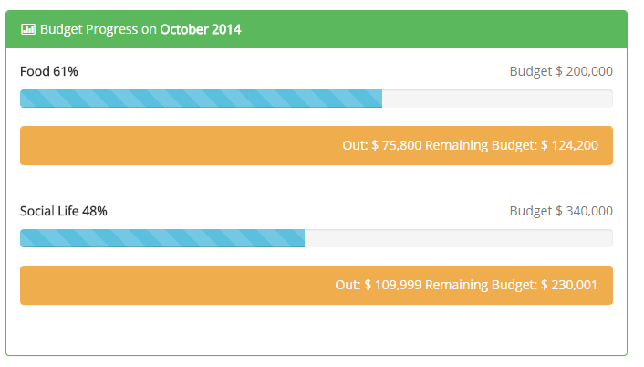
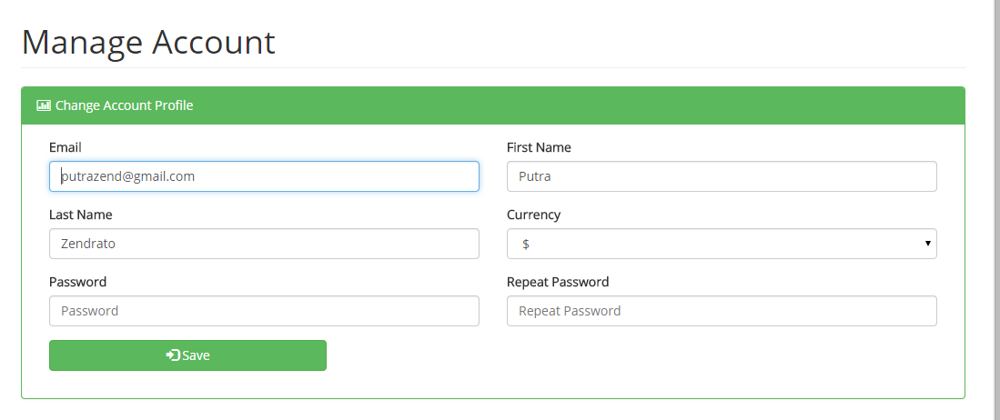

Texto original
Sugira uma tradução melhor
Suporte Gerenciador Financeiro para o Login e inscrição, Assim, qualquer usuário pode se cadastrar para Gerenciador Financeiro para controlar o seu próprio dinheiro.
SignUp destaque
Primeiro Nome: Preencha com o nome
Apelido: Preencha com sobrenome
Email: Preencha com e-mail
Moeda: escolher moeda local
Password: preencher com a senha
Neste destaque vai para adicionar receitas e despesas dinheiro.
Renda
Nome: Preencha com o nome de renda
Quantidade: renda montante
Categoria: A categoria desta transação. (Você pode modificar as categorias de rendimentos -> Gerenciar categorias)
Conta: Tipo de dinheiro ex. dinheiro, cartão de crédito.
Data: Data de renda transação
Descrição: colocar alguma descrição to Income
Para adicionar uma entrada de transação de despesa, clique em Operações.
Despesa
Nome: Preencha com o nome da despesa
Quantidade: quantidade para fora o dinheiro
Categoria: nome categoria de despesa (Você pode modificar as categorias de expense-> Gerenciar categorias)
Conta: Tipo de dinheiro ex. dinheiro, cartão de crédito.
Data: Data da operação despesa
Descrição: colocar um pouco de despesa descrição
No Gerenciador Financeiro você pode gerenciar o orçamento para o mês atual.
Orçamento para a categoria: Escolha de orçamento para a categoria ex. Comida
: Quantidade orçamento quantidade de mês atual
Orçamento de Progresso
Orçamento sobre o progresso é um destaque para controlar o seu orçamento para o mês atual.
Out: Quanto dinheiro você já gastou mês atual
Restante Orçamento: mês atual Quanto dinheiro orçamento restante
Relatório será parecido com este:

Categoria de despesa
categoria de despesa é um recurso on gerente de dinheiro para gerir a sua própria categoria de despesa.
Categoria de renda
categoria de renda é um recurso on gerente de dinheiro para gerir a sua própria categoria de renda.

As configurações podem usar para gerenciar a conta. Em configurações podem mudar nome, sobrenome, senha e moeda.
Por favor, altere sua senha, se as configurações da conta quero mudar.